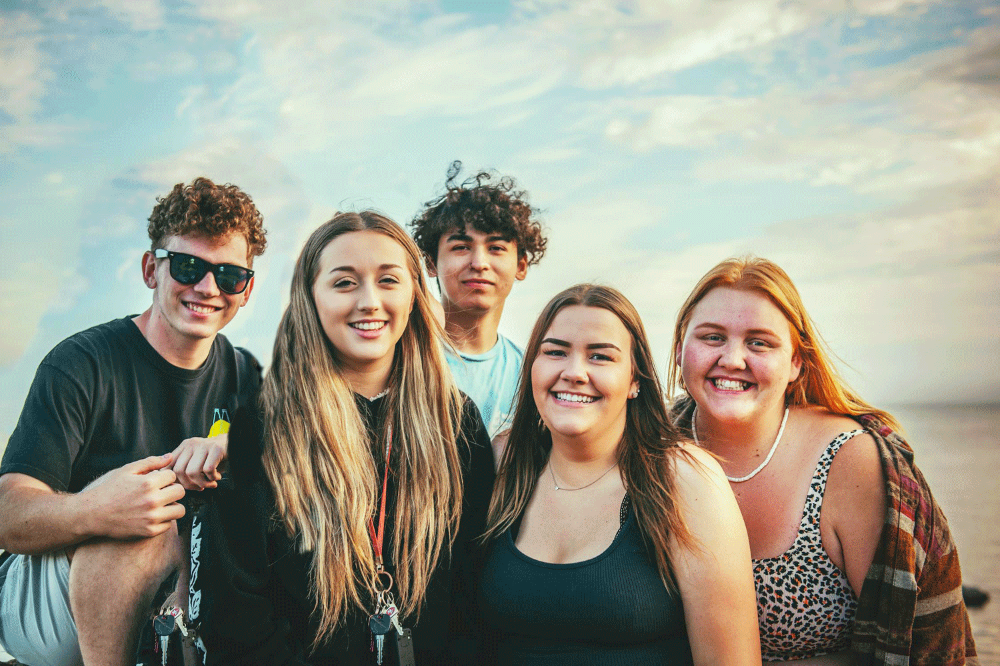

Vær med til finde på hyggelige temaer og afhold en hyggelig café for unge pårørende en gang om måneden.
Læs mere
Bliv tovholder og stå for organisering af informative og opløftende oplæg for unge pårørende.
Læs mere

Kom ud og rør dig på en gåtur med en pårørende og skab samtidigt et trygt rum til samtale.
Læs mere